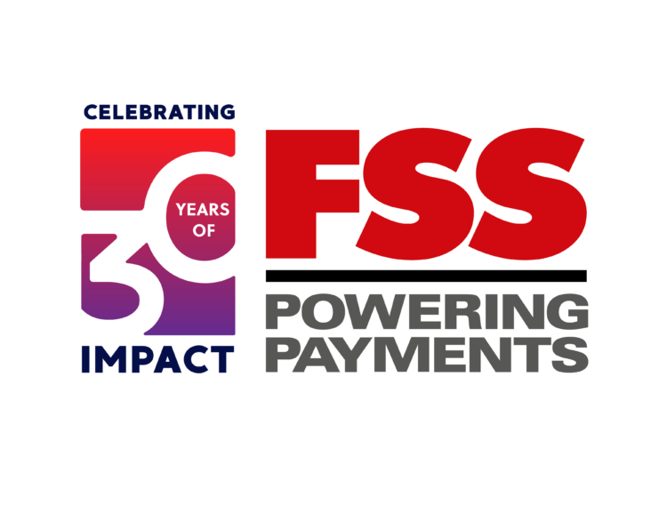

Graduate student with Software Development background and a passion for implementing cutting edge technologies in application development.
EXPERIENCE


| April 2022 - Nov 2022 Chennai, TamilNadu, India Associat Consultant |
Associate Consultant @Capgemini• Developed a data pipeline using Spring Boot and Hibernate to extract data from multiple sources, perform data cleansing, apply business rules, ensure data integrity, generate aggregates, and publish to the data warehouse.• Implemented Microservices with Spring Boot, incorporating service discovery using Netflix Eureka server •Created REST APIs for Microservices using Spring Boot and deployed them in a cloud environment. •Optimized and refactored code to enhance the performance of REST endpoints by up to 25%. •Deployed services in AWS cloud environments for development and staging using Jenkins pipelines. •Implemented Splunk reports and dashboards by leveraging log4j functionality, resulting in a 20% reduction in workload and improved monitoring capabilities. •Implemented logging and user session validation features using the Spring-AOP module and Spring IOC. •Developed a microservice named RFP (Request for Proposal) using Spring Boot with Spring MVC to provide a RESTful API. |
|---|---|
| Aug 2019 - April 2022 Chennai, TN, India Software Engineer |
Software Enginner @FSS• Understanding structure of data and identifying issues in patient’s records for extraction of valuable data• Leveraged data analysis techniques using SQL and Excel to build a robust flowchart to analyze improvements in patient’s conditions • Implemented strategies to eliminate inconsistencies in patient’s data to improve data reporting capabilities |
| April 2018 - July 2018 Guntur, AP, India |
WorkShop, KL University • Developed user interfaces with modern JavaScript frameworks HTML5, and CSS3, which revised user satisfaction by 31% • Supplemented object-oriented code in Node.js with 100% accordance with industry and company standards •Learned multiple threading, concurrency, design patterns, and impacts on application concurrency • Formulated and constructed web applications using JavaScript frameworks React.js and Angular.js to increase target audience engagement by 12% |
EDUCATION

Illinois Institute of Technology, Chicago
Masters in Computer Science
January 2023 – May 2024

KL University
Bachelor's in Electronics and Communication Engineering
August 2015 – May 2019
TECHNICAL SKILLS
LANGUAGES & TOOLS : C, C++, Java, Python, C#, Node.js, RStudio, Tableau, Object Oriented design and implementation, Git, .NET, Spring Boot
WEB TECHOLOGY : HTML5,CSS, JavaScript,Bootstrap
DATABASE/CLOUD : MYSQL, AWS, Azure, PostgreSQL, DBeaver
MANAGEMENT : SQL Server Management Studio, Microsoft Visual Studio, Kubernetes, Minikube
PROJECTS
Inventory Management System
Web based application for manageing inventory of a clothing apparel store using Java, Node.js,HTML,CSS,Javascript,Apache Server
framework
and MYSQL database.
United Airlines Performance Analysis
Analyzed various metrics of United Airlines compared to its close competitors and with industry
average using Tableau.